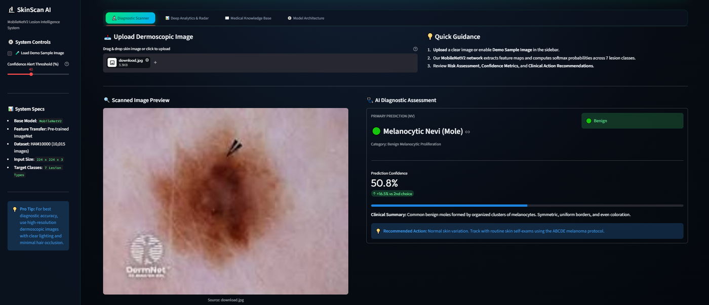
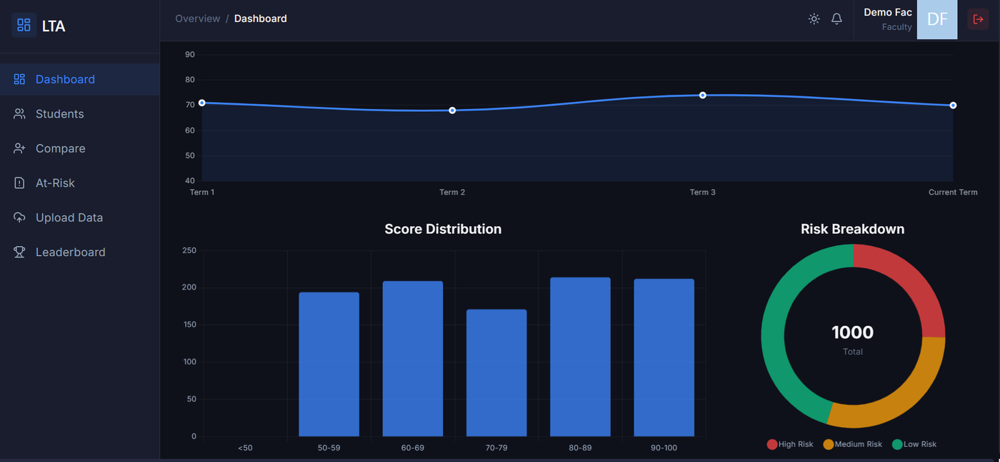
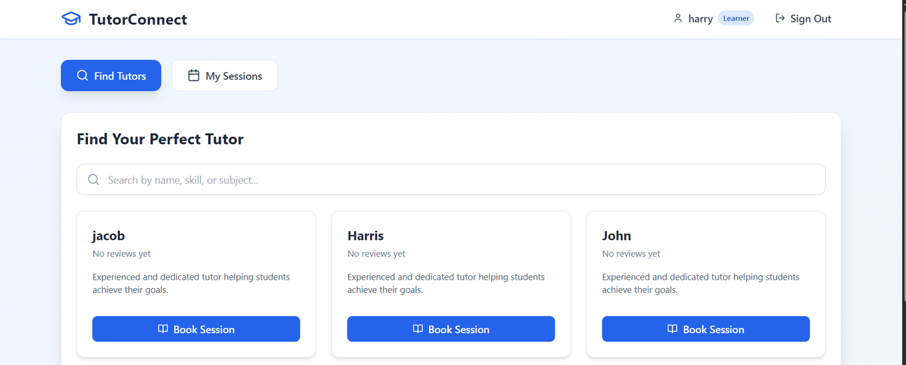
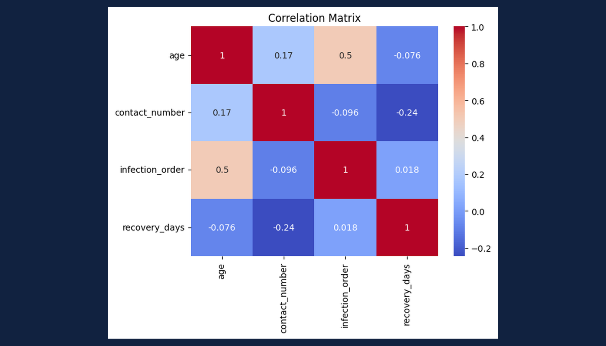
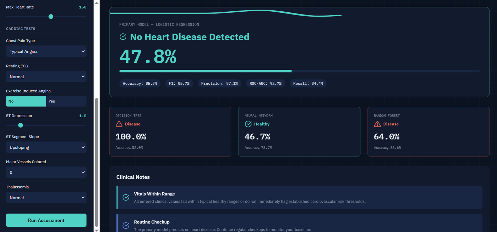
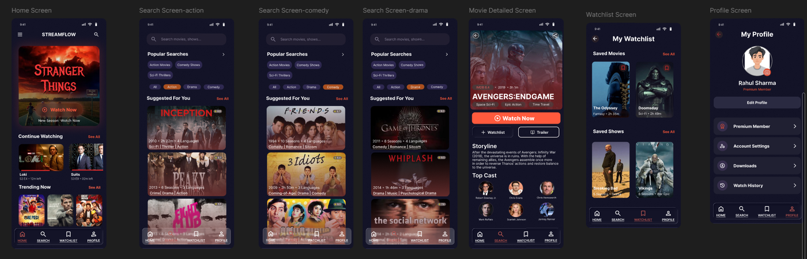

Hi, my name is
Om Mathur.
I build data-driven systems.
I'm a Full Stack Developer specializing in building robust, scalable applications and integrating machine learning models into real-world business solutions. I focus on creating seamless experiences from the database to the DOM.
About Me
Hello! I’m a BCA (Hons.) student specializing in AI & Data Science.
I enjoy building systems that combine data, logic, and real-world usability — whether it’s analyzing disease spread patterns, developing machine learning models, or creating full-stack applications.
Most of my learning comes from hands-on projects where I explore how data can be transformed into meaningful insights and practical solutions.
Highlights
- Education: BCA (Hons.) in AI & Data Science, K.R. Mangalam University
- Focus: Full Stack Development, Data Analysis, Machine Learning
- Philosophy: Write code for humans to read, machines to execute.
- Availability: Open for Internships.
Tech Stack
Frontend
Backend
Data / ML
Tools / Cloud
Featured Work

Deep Learning · Computer Vision
SkinScan AI - Skin Cancer Detection
A dermoscopic skin lesion classifier comparing a from-scratch CNN against MobileNetV2 transfer learning across 7 diagnostic categories, with Grad-CAM explainability and an interactive Streamlit demo.
- • Trained and compared 3 models on HAM10000 (10,015 images, 7 classes)
- • Handled severe class imbalance (58x gap between most/least common class) with class-weighted loss
- • Picked the best model by melanoma recall, not accuracy — the highest-accuracy model actually missed more real melanomas
- • Grad-CAM heatmaps for visual explainability, deployed via Streamlit
- TensorFlow/Keras
- MobileNetV2
- Streamlit
- Grad-CAM

Full-Stack + ML
Student Performance Management System
A student risk-tracking dashboard for faculty. Upload a class CSV, and it scores every student's risk level using both a rule-based check and a trained ML model, then surfaces at-risk students, trends, and insights.
- • Built with React, Flask, Supabase, and Scikit-learn
- • Implemented a Decision Tree model for predicting outcomes
- • Integrated attendance, scores, and participation data
- • Designed a responsive dashboard for insights and reporting
- React
- Python (Flask)
- Supabase
- Scikit-learn

Full-Stack · Hackathon Origin
TutorConnect
A peer-to-peer tutoring platform — learners search for tutors by skill, book sessions around real availability, and leave reviews after each session
- • React 18 + TypeScript frontend, FastAPI backend, PostgreSQL (Supabase-hosted)
- • JWT auth with bcrypt password hashing and separate tutor/learner dashboards
- • Backend validates bookings against a tutor's actual weekly availability before confirming
- React
- TypeScript
- FastAPI
- PostgreSQL

Data Analysis · Open Source
Infectious Disease Data Analysis
Analyzed real-world datasets to identify patterns in disease spread and trends across multiple variables.
- • Performed data cleaning and preprocessing using Pandas
- • Visualized trends using Matplotlib
- • Applied SIR-based modeling concepts
- Python
- Pandas
- Scikit-learn
- Seaborn

Machine Learning · Open Source
Heart Disease Risk Predictor
A Flask app that predicts heart disease risk from 13 clinical measurements, comparing four models trained on the Cleveland Heart Disease dataset.
- • Trained and compared Logistic Regression, Decision Tree, Random Forest, and a small neural network
- • Logistic Regression is the default (85.25% accuracy, 92.67% ROC-AUC), with live model-swap comparison in the UI
- • Flags input values outside typical healthy ranges with plain-language explanations
- • Surfaces Random Forest feature importances against dataset averages for disease vs. no-disease cases
- Flask
- Scikit-learn
- Keras

UI/UX Design
OTT App UI/UX Design
Designed a scalable OTT platform interface using Figma.
- • Built reusable components and design system
- • Focused on user flow and navigation
- • Created interactive prototypes
- Figma
- UI/UX
- Prototyping
Professional Journey
BCA (Hons.) in AI & Data Science
@ K.R. Mangalam University2025 - Present
- Focused on full stack development and machine learning.
- Built multiple real-world projects combining data and web apps.
Data Analyst Intern
@ CodeAlphaMay 2026 - June 2026
- Completed a 1-month virtual internship analyzing real-world datasets and building data-driven insights.
- Delivered an IPL cricket analytics project — data cleaning, exploratory analysis, and visualization.
- Project repository
Machine Learning & Deep Learning Bootcamp
@ K.R. Mangalam UniversityJune 2026 - July 2026
- Completed a hands-on bootcamp covering the full ML/DL pipeline.
- Applied concepts through hands-on projects and real-world case studies
Hackathons & Practical Learning
2025
- Participated in DeepDataHackathon (data-focused competition).
- Participated in Aarambhthon (problem-solving hackathon)
Project-Based Learning
2025 - Present
- Developed ML-based student performance prediction system.
- Worked on real-world datasets for analysis and visualization.
What's Next?
Get In Touch
I’m currently looking for internship opportunities and open to collaborating on interesting projects.
Say Hello